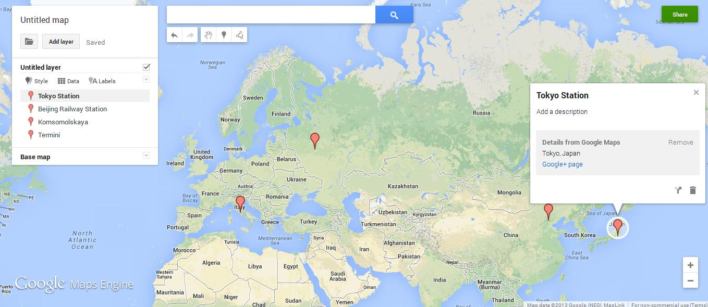
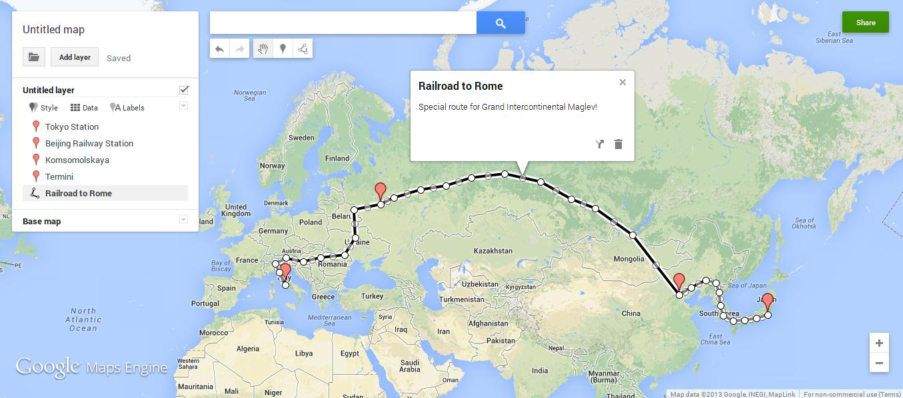
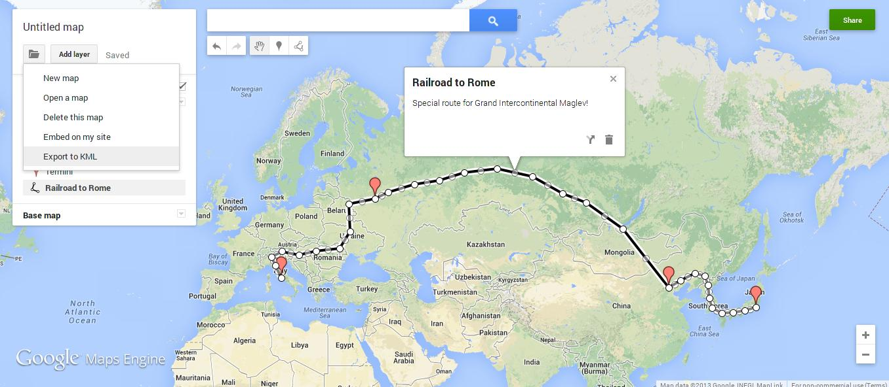
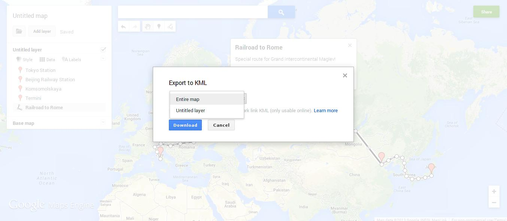
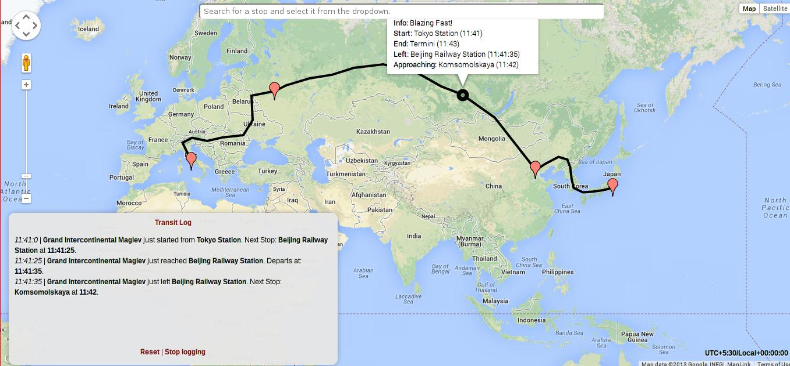
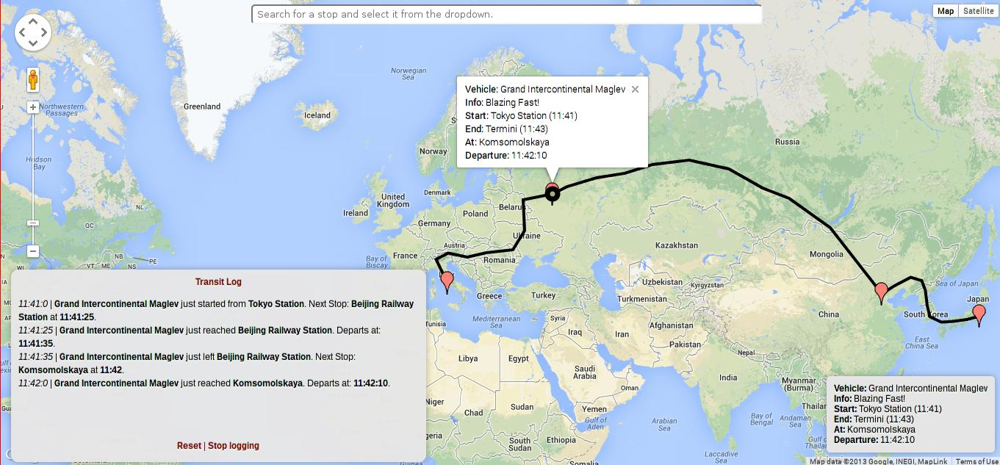
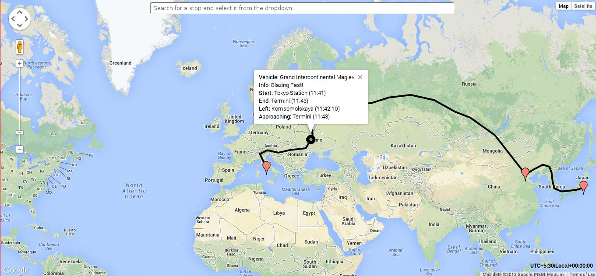
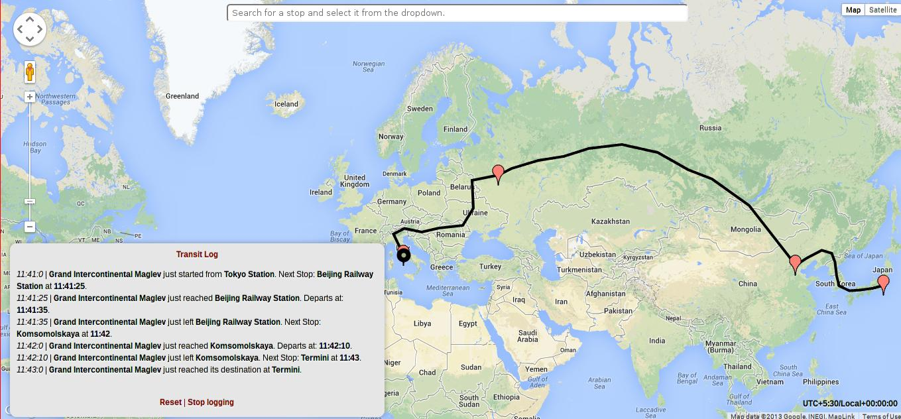

Make client-side, schedule-driven transit maps.
Transit lets you build completely client-side maps of schedule-based transit systems. There's no webserver involved, the browser does all the work.
Here's what a Transit app looks like in action.
What's this?
Transit takes a set of transit routes or paths, and a set of vehicles and their schedules, and simulates their movement on the given routes in a Google map (I'm working on
OSM support), based on the schedule. The transit routes are defined in a
KML (
Keyhole Markup Language) file, and the vehicle schedules are written in a
JSON (
JavaScript Object Notation) file.
To create the KML file, you can use a maps editor tool that can export visual geographic data as one. There are several, but the one I personally use is
Maps Engine Lite, Google's free online Maps editor that lets you work with Google maps. For the JSON, you can use a JSON editor. If you're writing
a lot of schedules, though,
Vim or
Emacs might save your sanity.
Transit comes with an Event log that logs arrival and departure times, a custom Search box that lets you zero in on a stop quickly, and status and info windows for displaying current information about vehicles.
Download and Usage.
You can download Transit in a zipped file from
here. Transit requires
jQuery 1.10.1, and the
Google Maps JavaScript API V3, so you'll have to include those too. The following should do:
<script src="http://code.jquery.com/jquery-1.10.1.min.js"><script>
<script src="http://maps.googleapis.com/maps/api/js?key={API_KEY}&sensor=false"><script>
<script src="transit.js"></script> <!--You can use transit-min.js (
minified file) here-->
The API_KEY for your app is optional, but it helps you with analytics, so if you plan to get one, start
here.
Transit does not have a CDN yet. Don't use the URL of the raw file from Github.
Github ain't no CDN.
Getting started.
Do you know that all railroads lead to Rome? One of them starts from Tokyo, goes to Beijing and Moscow, and ends in Rome. Well, not really, but let's make one anyway. We're going to draw the route from Tokyo to Beijing to Moscow to Rome and schedule a train called the
Grand Intercontinental Maglev to make a stopping run from Tokyo to Rome, covering the distance in less than 2 minutes. That's right, we're gonna use ultra-powerful magnetic fields for ultra-powerful magnetic levitation.
Fire up
Maps Engine Lite and log in with your Google Account if you use one.
Take a tour, if you wish.
Railroad to Rome - Making our transit routes.

First off, we place markers at all our stops, viz., Tokyo, Beijing, Moscow and Rome. You can search for them and add the marker to the map from the search result. If you manually place the markers, set their names and descriptions (optional).

Then, we draw the route between our stops. If there was a real railroad between your markers, you might want to trace through it. We'll draw a random railroad here, and name it the
Railroad to Rome. Notice how I placed line-points (the white circles that demarcate the line) below all the markers?
Don't forget to do that -
the markers just name the stops, the points are the actual stops.
That said, it's completely fine if you don't accurately place the points on the markers' bases. Transit will automatically resolve your markers' positions to the positions of the closest points on the line.

Self-explanatory. Once we're done, we export our map to KML.

If you create multiple layers, export the
Entire map. If it's just one layer, it doesn't matter, because that layer IS the entire map. We'll save our KML file as
railroad_to_rome.kml.
NOTE:
1. Multiple stops must not have the same name. If you have two stops in the route that share a name, just name them
<Stopname> #1 and
<Stopname> #2 (Tokyo #1 and Tokyo #2) or similar.
2. A route/line must not pass through the same stop more than once. If you need this functionality, make two markers and points for a single stop, and again, name them
<Stopname> #1 and
<Stopname> #2.
The Grand Intercontinental Maglev - Scheduling our vehicles.
Let's create a JSON file and name it
railroad_to_rome_schedule.json. The schedule file needs to have the following format:
Show
{
"timezone": "+/-HH:MM:(Optional SS, default 00)", (UTC offset in HH:MM:SS for the timezone you're gonna use)
"defaultstopinterval": "HH:MM:(Optional SS, default 00)", (Optional. If one of arrival or departure isn't specified for a stop, it's calculated using this interval. This is useful when you have to write schedules for vehicles that have a consistent stopping time of, say, 00:01:00. This doesn't apply to the first stop and the last one, because the first stop needs a mandatory departure time and the last one needs an arrival time)
"vehicles": (We write a list of vehicles and their schedules under this)
[
{
"name": "Vehicle #1",
"info": "Vehicle #1 Info", (Optional)
"route": "Vehicle #1 Route", (Name of the route in which it will travel, that we drew on the KML map)
"stops": (The schedule)
[
{
"name": "Stop #1", (Name of a stop in the route, that we defined with a marker in the map)
"departure": { "time":"HH:MM:(Optional SS, default 00)", "day": Integer (Calendar day starting with 00:00:00 and ending with 23:59:59, NOT the day of travel) }
},
{
"name": "Stop #2",
"arrival": { "time":"HH:MM:SS", "day": Integer },
"departure": { "time":"HH:MM:SS", "day": Integer }
},
..
..
{
"name": "Stop #N",
"arrival": { "time":"HH:MM:SS", "day": Integer }
}
]
},
..
..
{
"name": "Vehicle #N",
"info": "Vehicle #N Info",
"route": "Vehicle #N Route",
"stops":
[
{
"name": "Stop #1",
"departure": { "time":"HH:MM:(Optional SS, default 00)", "day": Integer }
},
{
"name": "Stop #2",
"arrival": { "time":"HH:MM:SS", "day": Integer },
"departure": { "time":"HH:MM:SS", "day": Integer }
},
..
..
{
"name": "Stop #N",
"arrival": { "time":"HH:MM:SS", "day": Integer }
}
]
}
]
}
So let's schedule our Grand Intercontinental Maglev.
{
"timezone": "+5:30:00", (Since I'm on UTC+5:30:00, I'll write the schedule in it, for convenience)
"defaultstopinterval": "00:00:10", (Let's have the Maglev stop for 10 seconds at intermittent stops so that we won't have to specify both arrival and departure times for Beijing and Moscow)
"vehicles":
[
{
"name": "Grand Intercontinental Maglev",
"info": "Blazing Fast!",
"route": "Railroad to Rome", (This is what we named our route, remember?)
"stops":
[
{
"name": "Tokyo Station",
"departure": { "time":"11:41", "day": 1 }
},
{
"name": "Beijing Railway Station",
"departure": { "time":"11:41:35", "day": 1 } (will arrive at 11:41:25 - default stop interval)
},
{
"name": "Komsomolskaya",
"departure": { "time":"11:42:10", "day": 1 } (11:42:00 arrival)
},
{
"name": "Termini",
"departure": { "time":"11:43", "day": 1 }
}
]
}
]
}
So that's it. That's the schedule for our blazing fast Maglev.
NOTE:
1. Each train can travel only through one route. If you have two trains sharing half of the same route and then diverging onto other routes, you'll have to draw two routes separately, overlapping on the shared half.
2. The first stop MUST have a departure time specified. Likewise with the last stop and an arrival time. The intermittent stops can have any one of them if you have a default stop interval.
3. The
day parameter indicates a calendar day, NOT the day of travel. If a vehicle starts at 23:59:59 and reaches its next stop at 00:00:00, you'd need to assign day 1 for the 23:59:59 departure and day 2 for the 00:00:00 arrival.
4. If a vehicle's journey spans multiple days, Transit will show you all possible positions at which the vehicle could be, at a particular point of time. This is why each vehicle is assigned a distinct color. It makes tracking easier.
Initializing our Map.
We now have
railroad_to_rome.kml and
railroad_to_rome_schedule.json. And we have
transit-min.js in our project too, so that makes it 3 files. We're gonna need one more, the app itself. So let's make a HTML file.
First, let's get some boilerplate out of the way:
<!DOCTYPE html>
<html>
<head>
<title>Grand Intercontinental Maglev on the Railroad to Rome.</title>
<meta charset="utf-8" />
<script src="http://code.jquery.com/jquery-1.10.1.min.js"></script>
<script src="http://maps.googleapis.com/maps/api/js?key={API_KEY}&sensor=false"></script>
<script src="transit-min.js"></script>
Transit maps are like other Google maps, they're rendered inside a
<div>. You can style them and overlay content on them like any other div. Let's make a div that occupies the whole page. Here's the code, along with some boilerplate.
<style type="text/css">
html, body {
height: 100%;
margin: 0;
padding: 0;
}
</style>
</head>
<body>
<div id="ourMapDiv" style="width:100%;height:100%;"></div>
The body of the document now occupies the whole page, and our map div now occupies the whole body. Our div has been made. We just need to initialize the transit map inside it. Transit's
initialize() function takes 5 arguments:
transit.initialize(selector, // The
selector of the div.
#ourMapDiv in our case.
localKmlFile, // The path to your KML file.
remoteKmlFile, // The same KML file, in a publicly accessible domain, for Maps API's use.
jsonFile, // The path to your JSON file.
refreshInterval // The number of seconds between each update of the vehicles' markers.
1 second by default, if not specified.
);
The remote KML file is required because the Maps API needs to access it and overlay it on your map. It needs to be in a publicly accessible webpage. Let's write the rest of our code with the initialize() call.
We're done.
Here's the whole repository of code we just created.
Deploying our App.
Since this is pretty much a client-side app, you can serve it from your webserver or straight out of Github.
Github Project Pages let you host client-side apps that run on the browser.
Here's our app, served from a Github Project Page. If you happen to catch it between 11:41 and 11:43 IST (The UTC+5:30:00 we specified, calculated and adjusted from the client's time and timezone) any day, say Hi to our Maglev.
Our Grand Intercontinental Maglev!
Right, our train is now scheduled to depart!

Nothing yet. Oh right, it's 11:40. Not quite time.

It's 11:41 now, and sure enough, there's our good ol' Mag.

Paying Beijing a visit.

Scorching a fiery trail between two borders in a few seconds.

Hang on while I think of a Soviet Russia joke.

Streaking across the EU.

I sure hope no one was on
that train.
Notes.
I might have missed out on a few things, but this page will stay updated, and more documentation is coming up. Meanwhile, you can
mail me for queries or check out
Transit's and
Chennairail's code, to get a better understanding of how Transit works. Bug reports, pull requests, and contributions are very much welcome.
The Chennai Rail Map loads a different schedule on Sundays, and uses an increased refresh interval on mobile devices to reduce load. The
transit.dayInTimezone() and
transit.isMobileDevice() functions help with this.
Also, Transit does not write statuses to the bottom right status box on Mobile devices, because hover events are pretty much non-existent in them. Instead, you can just click on the vehicle markers to know their statuses, just like on non-mobile devices.
And look out for our Maglev at 11:41 IST tomorrow!

{kind=link}
{kind=link}
{kind=link}
{kind=link}
{kind=link}
{kind=link}
{kind=link}
{kind=link}